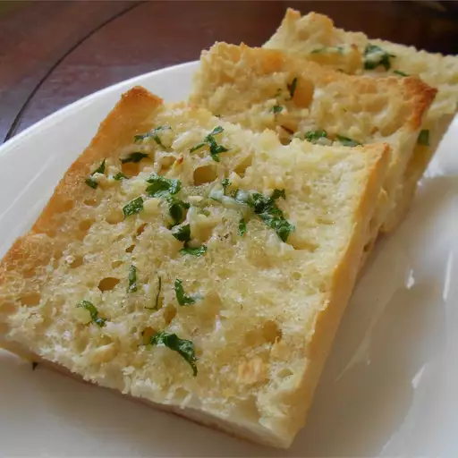

Roasted Garlic Bread

Easy roasted garlic bread made with roasted
garlic, butter, and Parmesan cheese.
Ingredients
- 3 heads garlic
- 2 tablespoons of olive oil
- 1 (1 pound) loaf of Italian bread
- 1/2 cup of softened butter
- 2 tablespoons of grated Parmesan cheese (optional)
- 1 tablespoon of chopped fresh parsley (optional)
Steps
- Preheat the oven to 350°F (175°C).
- Slice the tops off of garlic heads, so the tip
of each clove is exposed. Place garlic heads, cut-sides up,
on a baking sheet; drizzle tops with olive oil.
- Bake in the preheated oven until garlic is soft,
about 30 minutes.
- Set the oven to broil.
- Slice bread loaf in half horizontally; place cut-side
up on a baking sheet.
- Squeeze garlic cloves from their skins into a medium bowl.
Stir in butter, Parmesan cheese, and parsley until well blended.
Spread onto the cut sides of bread.
- Broil bread until toasted for about 5 minutes.